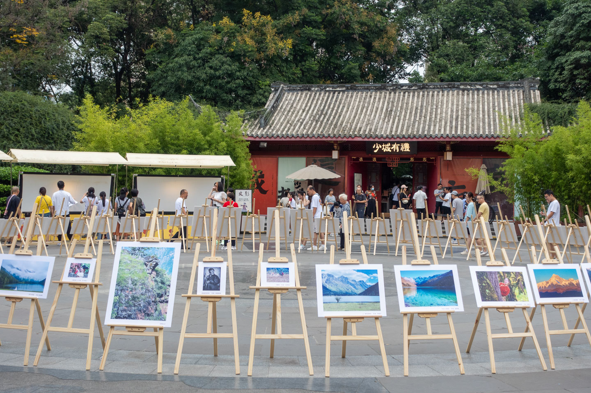

川西之行
2023-10-29
在2023年国庆节的前两周，我和L决定错峰出行去看看雪山，于是我们收拾好行囊，开始了我们的川西之旅。由于川西海拔较高且交通不便，以往的随意漫游方式似乎有点不太适宜，于是我们决定报个旅行团，行程酒店都不用考虑，只需要拿着相机咔咔就行。
旅行社是在携程上随意选的，是一个五天四夜去稻城的团，人均5000多，吃喝自便，但交通住宿旅行社全包。为了让旅途再轻松一点，我们跟团游前后都预留了一些时间在成都市区吃吃喝喝。
旅行出发的当天就出现了意外——我们的飞机推迟了近三个小时起飞！由于工作原因，我本计划到达成都后打开电脑处理点事情，但计划赶不上变化，机场处理又担心不太方便，所以只好坐在麦当劳里拿着小板板愉快地看别人谈恋爱。凌晨三四点，终于到达成都酒店，路上梦游似地回忆了上次来成都时的旅行经历，还来不及发表演说感想，看到床后就直接倒头入睡。这一晚睡得很好，飞机虽然延误，但好在我们平安抵达了。
第一日 —— 成都
由于是凌晨才到酒店的，所以我们计划第一天就按自己的节奏休整一下，恢复精力。酒店在天府广场附近，距离人民公园、宽窄巷子都比较近，所以第一天我们就随便走了走路然后逛了些附近的景点。
 人民公园景 1
人民公园景 1
人民公园景 2
我出门比较早，所以还去了人民公园对面的美术馆看了坂本龙一的一音一时视听展。展览看得还行，只不过不太懂，一是除了耳熟能详的一些曲子外不太了解这个人，二是也不能完全体会到创作者的意图。但总之第一个展 《感应流2023 - 不可见，不可闻》带给我的冲击还是挺大的。当时检完票自己钻进黑色的幕布进入第一个展厅后，突然被空旷黑暗的环境震惊到，皮肤上开始有了冷意，我开始感到恐惧。稍微定了定神，我走到房间正中的操作台前，开始环顾四周，诺大的空间除了我就是似乎毫无意义的白噪音以及超大屏幕上的不知含义的流沙似的黑白动图。在我没看导览前，那个空间直接把我从常规漫步探索外界的状态拽入到了一个向内收缩去感觉到自己的状态里。
感受许久，我终于在这个空间里感到舒适，于是我顺着设计好的展览路线继续向前探索，接着是《异步 - 沉溺》，《水的样态》，《异步 - 空间脉动》，《生命 - 流动，不可见，不可闻》，《时间洪流》，《异步 - 第一束光》，以及最后的《你的时间》。
在我看展的时候，L应该正拿着照相机在城市里走路、拍照。看完展后，我们又一起会合然后走街串巷，拍照纪念。
成都熊猫小屋
晚饭是在酒店点自己想吃的外卖，我点的旋子凉粉很辣，老妈蹄花和豆花分量很足，L吃的跷脚牛肉牛肉很多，而且口感和北京的略有不同……这天的最后是以半夜一起跑出去采购物资结尾的，当时我虽然不是特别乐意出门，不过本着「来都来了」的原则，出门夜游也算是体会成都午夜的浪漫了。
第二日 —— 出发，川西
和司机约好6:30出发，于是一大早就被闹钟喊醒，穿衣洗漱拉着箱子直奔楼下，我们坐的是九座的车，上了车发现除了我们没有别的游客了，一问司机师傅才知道原来这次的团就我们两个人，九座包车游简直不要太爽了！我给自己的包包们都找了个座位并系好安全带，打开酒店打包的早餐后，车子就启动了。出发！远处未知的一切！
服务区 L 游客照
这一天反正是超级累，出成都后，L因为太累，在车上睡着了，而我由于太兴奋地想知道自己途径的一切，于是打开地图开始左看右看，趁L睁眼时，我就见缝插针地开始卖弄自己刚得知的见闻，「你看，地图上有个丹棱县哎，和丹棱街是啥关系？」，「快看快看，这里有三苏镇，是不是和苏轼一家有关？」，「 哇，这是岷江，古时候叫汶江，汶川，汶川县就是因为岷江而得名，水是从都江堰来的呢……」
我一边看地图，一边浏览器搜索，直到自己也有点困意，放下板子偶尔闭目休息。突然我感觉外面开始下雨，而且车子越往前开，雨越大。在好奇心的驱使下，我打开了地图和浏览器，这才知道我到雅安了，雅安被称为雨城，这里是华西雨屏，雅州天漏，终年有近76%的时间都在下雨，杜甫还曾有诗句「地近天漏终岁雨」来描写雅安这个地方。这里的三绝就是雅雨雅鱼和雅女，由于雨水丰沛，鱼很好吃；因为紫外线少空气湿润，这里的女孩子也都很漂亮。
L在雅安时一直在休息，我憋着自己强烈的分享欲直到他醒来，然后开始滔滔不绝地讲起关于雅安我知道的一切，我们聊着聊着，就到了泸定县，渡过了大渡河。
穿越漫长的隧道后，巨大的云朵开始在头顶慢悠悠地漂浮，这里的风景和之前的都不太一样了，刚出成都时还是湿润的绿色盆地风景，而这里却开始显露出高原的特点了，远处山坡上有几个大字「康定情歌」，就要到康定市了！接着我们翻越折多山，从不少骑行和摩旅的人的身旁走过，看到路上五湖四海的汽车牌，我深深地感受到原来真的有很多人在路上！
进入藏族自治州后，很快就可以感受到他们独特的文化了，一路上不知道看到了多少个大大小小的石头堆，当地藏民称之为玛尼堆，由于藏民认为石头也是有灵性的，所以会把石头堆起来祈福，当藏民路过玛尼堆时，会顺时针走一圈，并添加一块新的石头，久而久之，石头堆就越来越多，也越来越大了。
L 游客照
走了很长的路，快12点钟时，司机终于对我们说，我们要到第一个景点了——木雅圣地。车停下后，我和L开始穿上稍厚一点的衣服，带上相机出发了。进入景区后，需要乘坐大巴往景点走，而开大巴的司机说还得一会儿才出发，让我们先随便转转，于是我们先回车里吃了点零食，瞧了瞧远处的牦牛和大巴附近的一只白色的胖胖的小狗。我们来的时候还没有其他游客进入景区，所以我们俩相当于包了一辆大巴车在景区里转。车子开到第一个景点看雪山之前，我还没有怎么感受到高原反应，而当下车爬完最后一个台阶到观景台后，我的心脏开始剧烈地跳动和感到头疼了，这时我的手表提醒我心率已经一百四十多了，想着自己是来看雪山拍照的，于是端起相机，用行动克服心理的恐慌，开始变成一个专业的业余拍照者。遗憾的是由于天气原因，没有看到景区里雪山的全貌。再接着就是坐上景区大巴去后面几个景点，我和L拍了很多照片，直到心满意足，然后出了景区前往下一站。
木雅圣地一景
我们当天去的第二个景点是鱼子西，名字很美，上山的路是真的难走，一路上惊险刺激，飞土扬尘，七拐八拐地终于到了一个很大的观景台。身体的反应还是有的，不能剧烈运动，我和L逗留了很久，拍延时，拍雪山，东南西北我们拍了个遍。风景还行，但这路况实在糟糕，建议没有川藏老司机，还是不要上来的好。
鱼子西上看到的雪山
鱼子西上看到的雪山 2
当晚入住的是新都桥的酒店，在休息之前，司机推荐我们可以吃牦牛肉火锅，一整天没有好好吃饭的我们就开始了这天最丰盛的晚餐了。吃饱喝足后，我们回酒店开始了特殊的奇妙夜晚。 酒店很干净，我们回去后由于太累就直接躺床上休息了，盖着被子我感觉自己迷迷糊糊地似乎睡着了但又不太像……直到晚上十一点，L把我喊醒说他感到不舒服，血氧很低，我一下慌了，赶紧下楼找前台要了制氧仪，我俩的血氧最终都稳定在八十到九十之间，晚上我盯着白色的天花板，开始对来这里是否正确表示怀疑，一晚上大脑不能正常思考，只是感觉到旅行的空虚，人生的无意义。勉强再次入睡，醒来后我和L竟比前一夜好得多，但由于担心之后出现更可怕的身体反应，我们犹豫二三，决定更改行程。
第三日 —— 再见，稻城
再见了稻城，其实还是会有些遗憾，但这时的我已经有了点感冒的迹象，如果不顾风险继续出发，没准儿会有意外发生。虽然内心有点纠结，但我还是强迫自己扭转心态，去处理麻烦的后续改行程事宜，尽可能多地看到事情好的一面。以前看过一个电影《阳光小美女》，是一个美国公路片，路上各种意外发生，但正因为这些意外，这个故事才吸引人心。路上我突然想到这个片子，开始觉得和L的行程也没准儿正在变得有趣。
塔公草原
离开新都桥后，我们开往塔公草原，我和L本不想下去参观，但司机师傅搬出「来都来了，不去看看？」的说辞后，我们还是下车去瞧了瞧这个草原。「塔公」藏语的意思是菩萨喜欢的地方，走过长长的步行栈道，我们登顶了塔公草原景区的高处，脚下就是塔公镇，由于天气原因我们没有拍到远处雅拉雪山的风景，但看到了山坡上有晨雾漫过的藏族六字真言，捕捉到了远处光线从空中撒到地面的一刻。L指着每个小山坡的顶跟我说「小c，看，有小旗子在飘，是经幡！」
塔公草原景 1
 塔公草原景 2
塔公草原景 2
藏族人的生活到底是什么样的呢？站在这里，我会想象如果我在这里远程办公，我的生活会是什么样的呢？这个安静与世无争的小镇，每天被诵读的经文唤醒，受人敬仰的雅拉神山时隐时现，这里人的心灵是否比都市里人的心灵更纯洁一些呢？
离开塔公草原，我们去了巴郎观景台，一路上风景很美，奈何司机开得太快，不能慢悠悠地欣赏。在巴郎观景台也是可以看到雪山的，不过由于我一直等着携程客服的电话，而山上信号时有时无，心里惦记着事情，不能惬意地只看风景。虽然最后风景都看了，但离开后我竟忘了这个地方的名字，还是L提醒我多次才勉强记住。令人难忘的是出景区后竟收获了意外之喜 —— 我们拍到了土拨鼠了，还是两只！
土拨鼠 1
土拨鼠 2
墨石公园
下一站我们到了墨石公园，我依然在和携程客服处理更换行程的事情，因为旅行社只退后面一天的酒店钱，但我和酒店联系并说明情况后，对方说是可以全退的。我很恼火旅行社没有章法地退改，于是各种电话沟通直到最终有了一个可以接受的方案。处理完必要的麻烦后，终于可以以轻松的心情看风景了。
墨石公园的天气有点奇怪，会突然毫无征兆地下雨，又突然地放晴。我把衣服系在腰间，一会儿从小背包里拿出相机拍照，一会儿撑开伞，手忙脚乱地拍照和被拍照，最后骑上一匹在路上还拉了便便的小黄马离开了景区。
墨石公园
墨石公园合影留念
雅拉观景台
离开墨石公园后，我以为今天的行程就结束了，但没想到车上了盘山公路，司机把我们带到一个可以看雪山的地方，原来这是我们的下一个景点——雅拉观景台。我和L又开启疯狂拍照，拍延时模式，我们终于在一个好天气近距离地拍到雪山了。
亚拉观景台 1
亚拉观景台 2
离开观景台，我们直奔丹巴县。去往丹巴县路上的风景也很美，公路两边都是峭壁，流水和公路在山谷下并线延伸，所以一路上总是可以听到哗啦啦的水声。到了丹巴，天已经彻底黑了，我们沿着山路盘旋而上终于到了甲居藏寨景区我们定的酒店了。
夜晚
这一天身体和心理都是高负荷运转，但这一天的意外还没结束。吃了好吃的腊肠腊肉后，我和L疲惫至极，躺下就直接睡着了，但在睡梦中我突然听到奇怪的声音，这声音来自天花板，一会儿像是有人走来走去，一会儿像狂风大作伴随的噼里啪啦的雨滴声，一会儿像是山间野猴的跳跃交流声。我和L同时醒来，询问彼此这是什么声音？此时是半夜两点钟，在疲惫不堪并被吵醒的情况下，我却忍不住想发笑，好像意外的出现是旅行必备的彩蛋，只有它出现后，我才可以安心地说一声「Hurry，又发现了一只呀哈哈！」
在联系酒店工作人员后，经过检查，他们告诉我们可能是老鼠，由于房子是木制结构，老鼠应该是在中间的木板夹层中，他们也没办法现在处理。由于深更半夜没有空房间也没有还在营业的其它酒店，我们勉强靠耳塞度过了一夜，第二天酒店给我们免单了。
第四日 —— 四姑娘山，我们来了！
甲居藏寨
酒店有个大平台可以观景，夜晚因为云太多不能拍星星，但离开前至少要上去瞧瞧风景吧！早上醒来看到司机师傅微信发的日照金山图后，我赶紧披上衣服直奔楼顶，终于在最后时刻用自己的双眼捕捉到了！ 视野从金灿灿的光线照耀的山脉上移走后，近百座藏寨出现了，它们高高低低地坐落在青色的山里，白色和红色的墙体让人们一眼就可以辨识出来，远处白云飘浮，大金川在东侧脚下奔流不息……司机师傅又开车载我们去了其他观景台，我和L在观景台没驻留太久，就下山了。参观这里是要门票的，即便在里面订了酒店住宿，也还是要付门票钱。
酒店天台景
甲居藏寨
接着我们就要前往最令人难忘的四姑娘山了，丹巴县到四姑娘山会途径小金县，路上我们看到一个超大的绿色苹果雕像，向司机师傅一打听，才知道这里盛产苹果，于是路上我们三块钱买了一大袋青色的苹果吃，并邮寄了一箱到家里。口感酸甜，还是很推荐的。
四姑娘山
因为前几天行程太满，我们和司机商量可以少去一些景点，于是这天剩下的时间我们都在四姑娘山的双桥沟玩。双桥沟景区是大巴开进去，到达景区最深处的景点后会让游客下车，参观完后游客可以像坐公交一样去往下一站景点，就这样一站一站地再回到景区入口，参观也就算结束了。与双桥沟类似的还有长坪沟，海子沟景区，但听说这两个景区只能徒步，喜欢徒步的朋友可以去感受下。 我和L在这里玩得十分尽兴，一整个下午都在看景拍照，甚至还坐船漂流了，总之这里是我这趟旅程中最喜欢的地方！当天我们就在景区附近住宿的，还好这一夜没有什么意外，终于睡了个好觉。
 双桥沟景 1
双桥沟景 1
双桥沟景 2
第五日 去往都江堰
从这天起，我们的旅途开始变得松弛有度，司机师傅开车也慢了下来，我们终于要回归城市的怀抱了。从四姑娘山出发，路过猫鼻梁，我们再次和眼前的雪山合影，然后途径汶川县的几个镇子到达了都江堰。
猫鼻梁景 1
猫鼻梁景 2
我和L先去了都江堰的景区逛了逛，然后穿过南桥进入灌县古城南街，向右拐进了古城的幸福路，慢悠悠地踱步到我们入住的酒店。休息片刻后我们就出门觅食和夜游了。这里令我印象最深的是南街和幸福路交叉口的海洋馆，入口处是盘柱的大蟒蛇和令人瞠目结舌的景点宣传：一层海洋馆，二层名人蜡像馆，三层恶灵病院。门口放着诡异的恐怖声音，几只大海龟在狭小的玻璃箱里看着去往幸福路的人们……这种奇怪的混搭给我一种心理上的不适感，也因此稀释掉古城其他地方带给我的美感了。
第六日 熊猫 + 青城山
这是我们回成都前的最后一天，早上我们去了熊猫谷，下午去了趟青城山就回成都了。熊猫谷感觉还是很推荐去的，我们比较喜欢这个地方，所以从早上八点一直玩到下午一点多，看小熊猫吃水果走路爬树和睡觉，看大熊猫吃竹子玩水水和拉粑粑。我实在不能理解自然界为什么有如此呆萌的生物，人们看到大熊猫，都不由自主地露出笑脸，我不禁在想，到底是我们保护了熊猫，还是熊猫驯化了我们？
熊猫谷竹林
小熊猫
大熊猫
由于我们在熊猫谷逗留太久，所以在青城山就只逛了三个小时。自为青城客，不唾青城地。为爱丈人山，丹梯近幽意。因为杜甫，我对青城山又多了一层喜爱。如果时间充裕，我会很想找到那块刻有《丈人山》的石头，也期盼着能遇到突然下雨的天气，然后被困在道观里听雨声。
青城山
下午五点多，我们回到了成都，和司机说再见后，我们终于自由了。晚上在三川里饭店吃的饭，然后夜游太古里，在苹果店门口看喷泉，逛超市回酒店，我一下子又融入了城市生活。
成都太古里
余后两天 成都
当没有司机催着赶路时，当然是要睡到自然醒了。我们先是逛了杜甫草堂，然后去万象城厨子下山饭店吃饭，这家红烧肉还是很好吃的，在万象城我还知道了任天堂的Amiibo，然后吃了冰激淋就回酒店了。
杜甫草堂景 1
杜甫草堂景 2
接下来的一天我们去了天府广场，逛了成都博物馆，心满意足地盖完了博物馆所有的章，看了川剧变脸，吃饭然后逛漫画店，在城市里吃吃喝喝闲散逛街还是很开心的。我们第二天上午就要飞回北京了，临走之前我竟然接到诈骗电话说我们飞机有故障让我们改签，要不是对方不标准的普通话暴露了他，没准儿我还会多周旋几轮对话，这也算是给我们的行程画上了一个充满意外的句号了。
尾声
回去之后我就病了，可能是着凉，反复感冒到现在还没有彻底恢复。把这遍游记写完，我感觉心理上很疲惫，这趟旅程，我马不停蹄四处奔走，可回望过去似乎多少都有些遗憾，虽说看的景点很多，但安排得是有些过于紧凑，按照我和L以往的旅行经验，每个景点都多待半天是比较合适的。由于有司机在，彻底地自在悠闲旅行有点不太现实，也许最好的方式就是有充足的时间，然后自驾吧。